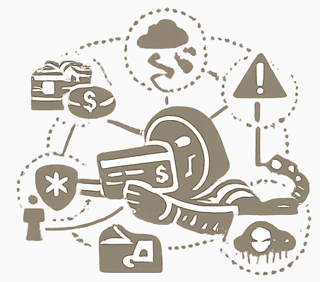

The Final Line of Defense for AI Systems
Not every AI system can be continuously tested from the outside.
Many enterprise, private, internal, or autonomous AI deployments are not public, are not externally accessible, and operate inside closed environments.
In these cases, permanent external red teaming is limited or unavailable. This is where Oraculex becomes essential.
Oraculex continuously records and analyzes the activity of controlled AI systems.
The system detects unacceptable, unsafe, deceptive, or high-risk behavior in real time.
Oraculex goes beyond monitoring. It predicts likely future actions before they occur.
Integrated into Oraculex is a high-speed graph intelligence engine based on Reazonex architecture.
Because graph reasoning operates significantly faster than many transformer workflows, Oraculex can simulate multiple forward scenarios while the controlled system is still processing its current step.
Example:
While a transformer model is performing inference, Oraculex may already have built five probable next-action scenarios, evaluated their risk level, and blocked unsafe execution paths before they happen.

Oraculex is designed to operate in a separate trusted environment, isolated from the controlled AI itself.
This ensures that monitored systems cannot tamper with logs, disable oversight, or manipulate security conclusions.
Together with Dailogix and Reazonex, Oraculex completes a full AI defense model.
As AI systems gain autonomy, reacting after an incident is too late.
Protection must be predictive, independent, and immediate.
Monitor. Predict. Prevent.